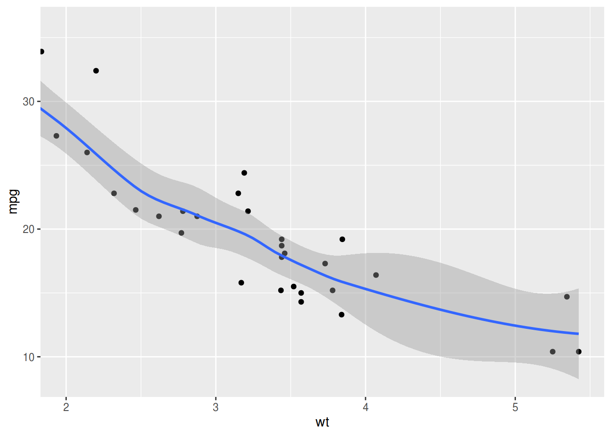
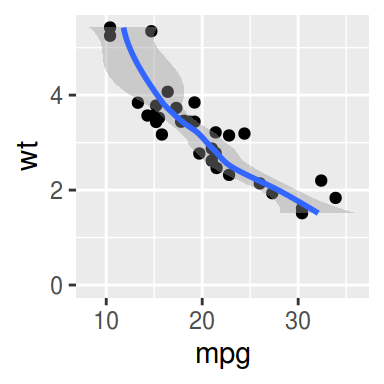

PRに向けての試験的な実装．
https://github.com/atusy/ggplot2/commit/26c1b7a478585889947d265d691e375e399637c3
なぜかxlimやylimに長さ3以上の連続値を取れてしまうので，
本来はscale_*_continuousやxlimに合わせて長さ2までに制限すべきだと思う
試験的ながら，パッケージとして試したい方は
devtools::install_github("atusy/ggplot2", ref = "scale_range_accept_na")
問題
xlim(0, NA) みたいに， coord_cartesian(limits = c(0, NA)) とすると，エラーを吐く．
g <- qplot(wt, mpg, data = mtcars, geom = c("point", "smooth"))
g
## `geom_smooth()` using method = 'loess' and formula 'y ~ x'

g + coord_cartesian(xlim = c(2, NA))
Error in if (zero_range(range)) zero_width else diff(range) : missing value where TRUE/FALSE needed
これが嫌でソースを確認したところ，
scale_range
の処理を直せばいいと分かった．
エラー源である，zero_range利用部分の修正は他の機能に影響しかねないので避けた．
実装
オリジナル
scale_range <- function(scale, limits = NULL, expand = TRUE) {
expansion <- if (expand) expand_default(scale) else c(0, 0)
if (is.null(limits)) {
scale$dimension(expansion)
} else {
range <- range(scale$transform(limits))
expand_range(range, expansion[1], expansion[2])
}
}
limits として，xlimないしylimを受け取り，
利用しているscaleに応じたtransform (常用対数変換や平方根変換) を行ったものの range (範囲) をとる．
修正版
scale_range <- function(scale, limits = NULL, expand = TRUE) {
expansion <- if (expand) ggplot2:::expand_default(scale) else c(0, 0)
if(is.null(limits)) return(scale$dimension(expansion))
if(length(limits) == 2) {
limits <- ifelse(is.na(limits), scale$dimension(c(0, 0)), limits)
}
range <- range(scale$transform(limits))
scales::expand_range(range, expansion[1], expansion[2])
}
limitsの長さが2の時は，NAをデータの範囲に置き換えるようにした．
実験
まず，新しい scale_range をggplot2の名前空間に上書きする．
assignInNamespace("scale_range", scale_range, getNamespace("ggplot2"))
そして試す
g + coord_cartesian(xlim = c(2, NA))
## `geom_smooth()` using method = 'loess' and formula 'y ~ x'

xlim を使った場合，以下のように除去された点の存在を教えてくれる．
また，点を除去した後に回帰曲線を引くので，点を除去せずに回帰曲線を引く coord_cartesian とは根本的に結果が違う．
g + xlim(2, NA)
## `geom_smooth()` using method = 'loess' and formula 'y ~ x'
## Warning: Removed 4 rows containing non-finite values (stat_smooth).
## Warning: Removed 4 rows containing missing values (geom_point).

他のcoord_系列も問題なさそう
g + coord_fixed(xlim = c(0, NA))
## `geom_smooth()` using method = 'loess' and formula 'y ~ x'

g + coord_flip(xlim = c(0, NA))
## `geom_smooth()` using method = 'loess' and formula 'y ~ x'

感想
coord_系もscale_系やxlimなどに合わせて，xlim/ylimの値を長さ2の連続値に制限すべきだと思うのだけれど，なんでそうしないのだろう？